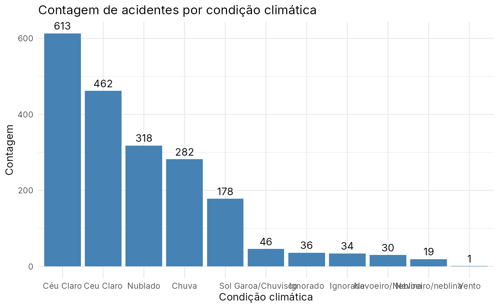

prf_amazonas
prf_amazonas.RmdDados de acidentes registrados pela Polícia Rodoviária Federal no Amazonas em 2025
Descrição
Registros feitos pela Polícia Rodoviária Federal sobre acidentes que aconteceram no Amazonas em 2025
Formato
‘prf_amazonas’ Um data frame com 116 linhas e 30 variáveis:
Fonte
Brasil. Polícia Rodoviária Federal (PRF). Dados Abertos da PRF: Acidentes de Trânsito. https://www.gov.br/prf/pt-br/acesso-a-informacao/dados-abertos/dados-abertos-da-prf.
Exemplos
require(dplyr)
require(forcats)
require(ggplot2)
require(amazonasdatahub)
# Contando acidentes agrupados por condicao climatica e plotando o grafico
prf_amazonas %>%
count(weather) %>%
mutate(
weather = fct_reorder(weather, -n)
) %>%
ggplot(aes(x = weather, y = n)) +
geom_bar(stat = "identity", fill = "steelblue") +
geom_text(aes(label = n), vjust = -0.5) +
theme_minimal() +
labs(
title = "Contagem de acidentes por condição climática",
x = "Condição climática",
y = "Contagem"
)